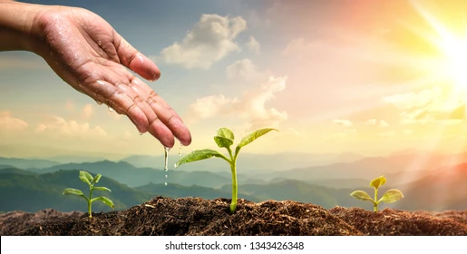

Key Farming Practices

Crop Rotation
Learn how to implement effective crop rotation techniques to improve soil health and increase yields in Kenya's diverse regions.
Read More

Water Conservation
Discover innovative water conservation methods tailored to Kenya's climate patterns and agricultural needs.
Read More
Sustainable Farming
Explore sustainable farming practices that preserve Kenya's rich biodiversity while ensuring food security for communities.
Read More